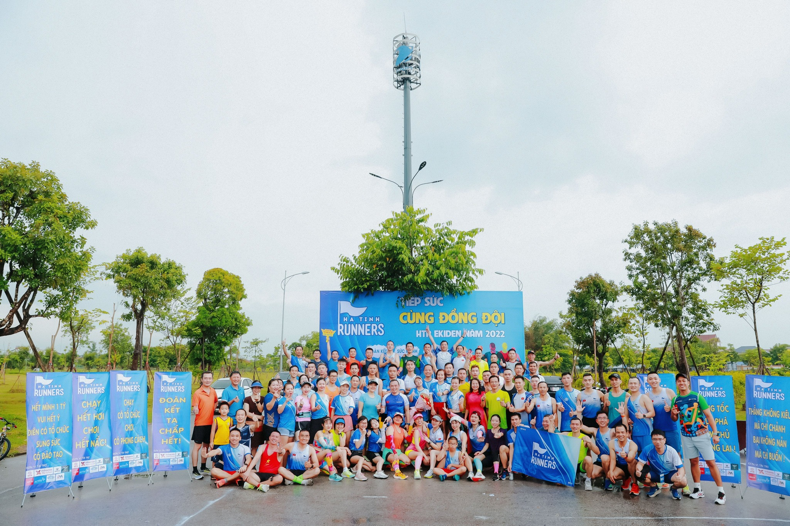

TẢN MẠN VỀ LONG RUN
1. Long run là gì? Diễn ra theo tần suất nào?
Long run hay chạy dài hiểu đơn giản là chạy dài hơn cự li bạn vẫn chạy, tuỳ khả năng và sắp xếp của từng người bài Long run có thể 2,3km cho đến 20,30km.
Long run thường diễn ra một lần/tuần. Đối với vận động viên chuyên nghiệp họ có thể Long run 2 lần/tuần hoặc hơn.
Long run chắc chắn đối với người yêu chạy bộ là hoạt động nên được thực hiện thường xuyên để duy trì sức khoẻ, đam mê của mình.
2. Lợi ích của Long run
Đối với các các runner ở bất cứ cự li nào từ ngắn, trung bình tới dài, siêu dài như Marathon, siêu Marathon thì Long Run là hoạt động quan trọng nó như là những trải nghiệm khá gần với cuộc thi đường dài (Race). Long run giúp Runner duy trì, nâng cao sức bền để cơ thể trở nên khoẻ mạnh, dẻo dai hơn cả trên đường và trên giường :)).
Sức khoẻ của vận động viên được chứng minh là cải thiện rõ rệt sau bài long run. Không chỉ về thể chất, hệ hô hấp, hệ tim mạch mà còn cả về sức khoẻ tinh thần, bản thân họ được nâng cao hơn, xả stress và có lối sống, năng lượng tích cực hơn.
Bên cạnh đó, các hoạt động long run thường có sự tác động mạnh mẽ đến cộng đồng, những người thân, bạn bè, đồng nghiệp của bạn, thậm chí lan toả đến bất cứ người nào. Sự lan toả đó giúp cho phong trào, cộng đồng trở nên mạnh khoẻ hơn.
Đối với các nhóm hay câu lạc bộ chạy bộ thì Long run có lẽ là thời gian hiếm hoi trong để các anh chị em tập hợp hàn huyên tâm sự, chạy cùng nhau một cách đầy đủ, khích lệ động viên cùng nhìn nhau để chạy, là hoạt động quan trọng để gắn kết các thành viên với nhau, qua đó để có các thành viên mới tham gia nhóm hay câu lạc bộ (kéo sụp người ta xuống hố). Có thể thấy Long run là hoạt động quan trọng bậc nhất để phát triển nhóm chạy bộ.
3. Long run thời gian nào trong tuần?
Lợi ích của Long run không phải bàn, vậy Long run vào thời gian nào? Tổng kết các hoạt động chạy bộ của các nhóm chạy lớn, bất kể ở một quốc gia thì Long run thường diễn ra ở thời điểm mọi thành viên đều có thể bố trí sắp xếp được. Như vậy, phù hợp nhất thường là thời điểm cuối tuần hoặc thứ 7 hoặc chủ Nhật, lúc đó mọi người có thời gian hơn cho đam mê, sở thích của mình.
Vì là hoạt động diễn ra với thời gian và cự li dài nên sẽ phù hợp hơn nếu hoạt động này diễn ra vào sáng sớm, đặc biệt vào mùa hè thời tiết nóng nực, buổi sáng sớm điều kiện về thời tiết là phù hợp hơn, ngoài ra dậy sớm cũng là một thói quen tốt qua đó duy trì hoạt động chạy bộ nói chung đặc biệt là các bài long run. Đối với mùa đông có thể là các buổi chiều, tuy vậy, buổi chiều việc tụ tập đầy đủ các thành viên sẽ khó khăn, long run buổi chiều có thể tự sắp xếp một mình hoặc một nhóm nhỏ sẽ hợp lí hơn.
Thời gian cụ thể cho hoạt động Long run phù hợp cho nhịp sinh học của các runner thường sẽ là 5-7h sáng thứ 7 hoặc chủ Nhật hàng tuần. Tuy vậy, nhiều người vì công việc hoặc vì lí do cá nhân sẽ bắt đầu tập và kết thúc việc luyện sớm hoặc muộn hơn. Đặc biệt đối với các vận động viên chuẩn bị cho các giải đấu cận kề, Long run cần có kế hoạch tỉ mỉ hơn, thậm chí bố trí long run mô phỏng thời gian của giải đấu, những trường hợp này, runner có thể bắt đầu Long run từ 12h đêm, nghe có vẻ điên rồ nhưng đó là cần thiết quan trọng. Các runner nếu muốn chinh phục bản thân việc tự kỉ luật là rất quan trọng. Các bạn sẽ thường thấy ở các giải đấu quan trọng có sự tham gia của các vận động viên chuyên nghiệp cự li dài, họ thường đến địa điểm thi đấu trước hàng tháng trời, tập luyện, mô phỏng giải đấu để có thể có thành tích tốt nhất.
4. Địa điểm Long run
Đối với các nhóm chạy lớn mục tiêu là tập luyện cùng nhau nên sẽ phù hợp nếu Long run diễn ra tại một địa điểm cho tất cả mọi người có thể tời, chạy vòng lặp quãng đường nhất định. Vòng lặp (Loop) lí tưởng nên là từ 1-2Km như vậy các vận động viên sẽ nhìn thấy nhau trong quá trình tập luyện có thêm động lực tinh thần để hoàn thành bài chạy. Cung đường 1-2Km cũng sẽ giúp cho việc hỗ trợ tiếp nước sẽ dễ dàng, thuận tiện hơn, trong nhóm lớn sẽ hình thành các nhóm nhỏ chạy cùng tốc độ, vừa chạy vừa chia sẻ kinh nghiệm, học hỏi lẫn nhau và đặc biệt sẽ nỗ lực, cố gắng hơn, yếu tố tinh thần trong bài chạy dài là vô cùng quan trọng.
Các địa điểm phù hợp là các công viên, hoặc cung đường ít phương tiện qua lại. Cuối tuần nếu bạn muốn long run mà chưa có địa điểm hãy đến những nơi đó chắc chắn các các Câu lạc bộ, nhóm chạy đang rất đông. Ở Hà Nội một số địa điểm có nhiều người long run như: Bờ Hồ Hoàn Kiếm, Công viên Thiên Văn Học, Công viên Thống Nhất, Công viên Thanh Xuân, Công viên Hoà Bình, Starlake, Green Star… ở TP Hồ Chí Minh có thể là khu Starlake, Vạn Phúc, An Sương… Ở Hà Tĩnh một số địa điểm lí tưởng cho Long run có thể là Hồ Bồng Sơn, Vòng lặp hơn 1Km ở quảng trường UBND tỉnh, đường Hàm Nghi hoặc đường 70 (vòng gọn lại) …
Đối với các cá nhân, nhóm nhỏ thì Long run có thể không cần cung đường lặp hoặc vòng lặp lớn hơn vì không phân chia thành nhiều nhóm tốc khác nhau tuy vậy cũng cần có sự chuẩn bị kỹ càng và tính toán địa điểm, cung đường chạy hợp lí để hoàn thành bài chạy và an toàn trong suốt buổi chạy. Các cá nhân hoặc nhóm nhỏ có thể lựa chọn thể các cung đường mới lạ như chạy dốc qua cầu lớn, chạy đường trail, chạy thời tiết nóng… để tăng khả năng chịu đựng cũng như thích ứng cho các giải chuẩn bị tham gia.
5. Cự li, thời gian Long run
Thuật ngữ Long run có nghĩa là chạy dài, vậy chạy dài cự li như thế nào? Câu hỏi này phụ thuộc vào kinh nghiệm, khả năng, kế hoạch của mỗi người.
Cự li của Long run đơn giản nhất là vượt quá cự li hàng ngày mà vận động viên đó vẫn tập luyện, về con số có thể đơn giản là 3km, 5km, 10km… thậm chí lên đến 35-40km. Nếu tập luyện cho các giải đấu thì bài dài thường phải là bài vượt quá ít nhất ½ cự ly thi đấu. Đối với các cự li Full Marathon (42km) theo các tài liệu sách vở, cũng như thực tiễn vận động viên đã vận dụng thì các bài dài thường từ 20 đến 38km, tuy vậy cũng có thể có những bài dài hơn lên đến 40-50km. Đối với cự li Half Marathon (21km) tập luyện cho bài long run thường khuyến khích từ 12-18km, đối với những người đã từng chạy FM xuống tập luyện HM họ có thể tập luyện với quãng đường dài hơn.
Bên cạnh đó Long run có thể tính theo thời gian chạy, có nghĩa là bình thường bạn chạy 20-30 phút thì Long run bạn sẽ chạy dài hơn có thể lên 45-60 phút. Đối với các vận động viên khả năng khác nhau thì bài tập luyện cũng không thể giống nhau được. Bài tập luyện theo thời gian cho cự li FM thường là từ 1h30p đến dưới 3h, HM có thể là 1h-1h45p. Đáng lưu ý là để nâng cao hiệu quả của bài chạy vận động viên không nên nghỉ giữa quãng nhiều quá hoặc quá lâu, bạn có thể giảm tốc độ hoặc nghỉ ngắn sẽ hợp lí hơn. Nhiều vận động viên tập cho các giải FM thường sẽ chạy theo thời gian, phổ biến là từ 2h-2h30.
6. Tốc độ Long run
Có rất nhiều dạng bài chạy điều chỉnh tốc độ trong Long run. Tuy vậy cần lưu ý nguyên tắc, không nên bắt đầu bài long run với tốc độ cao. Có thể Long run không cần quá nhiều thời gian khởi động như các bài tốc độ, bài long run nên bắt đầu với tốc độ chậm ở 1-2km đầu tiên để cơ thể nâng dần nhịp tim, các cơ khớp nóng lên trước khi tăng tốc độ lên. Có thể có một số dạng bài tốc độ trong Long run như:
- Chạy đều xuyên suốt bài tập: Vì là bài tập bền nên tốc độ không quá quan trọng, có thể nằm ở mức Base, tim bạn ở zone 3 hoặc căn tốc độ có thể là Marathon Pace cộng thêm 30-45s. Ví dụ: Bạn chạy FM với Pace 5:00 thì Pace bài Long run có thể là 5:30-5:45
- Chạy Negative: Chạy nhanh dần cho đến khi kết thúc bài chạy. Có nhiều vận động viên rất thích chạy kiểu này, họ như là thợ xây cầu thang, mỗi km nhanh dần 2-3s, việc căn thời gian đó đòi hỏi sự tỉ mỉ, quan sát và khá thú vị, hoạt động này thường diễn ra với vận động viên chạy 1 mình hoặc nhóm 2-3 người. Kết thúc bài chạy tiệm cận tốc độ với Marathon Pace.
- Chạy Fast Finish: Đây là bài tập khá phổ biến của nhiều vận viên tập luyện cho FM, họ sẽ chạy Base run ở quãng đường đầu tiên và kết thúc với 3-5Km Marathon Pace hoặc kết thúc với 20-30 phút Marathon Pace. Ví dụ đơn giản nhất: Bạn đặt mục tiêu chạy FM với time là 3h, Long run có thể: 23-25km Pace 4:45-4:30 + 3-5Km Pace 4:15-4:20. Dạng bài này vừa tích luỹ sức bền vừa kết hợp tốc độ ở những km sau cùng. Nhiều người khi tích luỹ chưa đủ sẽ không đủ sức để tăng tốc ở những km cuối của bài chạy.
- Chạy Long run kết hợp Tempo: Đối với những vận động viên không sắp xếp được bài tốc độ trong tuần hoặc muốn nâng độ khó của bài chạy hoàn toàn có thể kết hợp “ghém”. Có nghĩa là bài chạy sẽ chia thành một số tổ từ 2-5Km với tốc độ nhanh hơn hoặc bằng Marathon Pace.Nhưng đây là bài có độ khó cao không nên áp dụng liên tục, thời gian phục hồi sẽ là lâu hơn so với các bài khác. Ví dụ: Bạn có thể chia thành 3 tổ: 2Km chạy nhẹ + 4 lần (6Km Marathon Pace + 1Km Chạy nhẹ), tổng quãng đường sẽ là 30Km. Hoặc có thể chạy bất cứ kiểu nào miễn sao hoàn thành cự li và thời gian đã định.
7. Chuẩn bị trước và sau long run
Có thể nói Long run nên được chuẩn bị kỹ càng. Trước tiên bạn cần được nghỉ ngơi hoặc chạy nhẹ trước ngày Long run. Điều này giúp bạn phục hồi tốt hơn, nhiều năng lượng, sức khoẻ hơn để đi hết bài Long run. Bạn cần ngủ nghỉ đủ, nếu Long run buổi sáng runner cần phải đi ngủ sớm và dậy sớm theo kế hoạch.
Quần áo, giày dép, nước nôi nên được chuẩn bị buổi tối trước đó. Sáng mai, sau khi ngủ dậy, bạn có thể uống một cốc nước ấm, thêm đồ ăn nhẹ, dễ tiêu, cố gắng đi vệ sinh nặng nhẹ (nhiều runner đã hình thành thói quen tốt này sau khi sa hố).
Bạn di chuyển đến địa điểm Long run, tới điểm Support khởi động, nói chuyện và bắt đầu bài chạy. Có thể tìm kiếm nhóm cùng tốc độ để đeo bám, buổi chạy sẽ thú vị hơn nhiều đấy. Nếu bạn chạy một mình hoặc nhóm nhỏ các bạn vẫn nên tính toán chuẩn bị mang theo nước, điện giải.
Long run bằng giày nào bạn thấy thoải mái, nên là các đôi giày bạn đã quen, đế giày không nên hỗ trợ quá, không cần thiết quá để mang giày Race trong tất cả các buổi Long run. Thậm chí bạn có thể chạy bằng dép chạy bộ hoặc nhiều vận động viên kinh nghiệm còn chạy chân đất. Tựu chung, bạn mang giày dép gì để bạn cảm thấy thoải mái, không nên mang đôi giày mới lần đầu cho buổi chạy dài.
Quần áo cũng cần chuẩn bị, nhiều runner đã bị cọ rát các bộ phận cơ thể khi mang quần quá ngắn hoặc quá chật. Vì long run sẽ diễn ra trong thời gian dài hơn nên quần áo sẽ bị ướt sũng, mồ hôi sẽ ra nhiều hơn. Bạn có thể chuẩn bị thêm quần áo để thay sau khi hoàn thành bài chạy.
Về dinh dưỡng, sau bài chạy dài bạn nên ăn uống bổ sung năng lượng càng sớm càng tốt, có thể là cháo, phở, bún, hoa quả, bánh mì…
8. Tính kế hoạch bài chạy dài
Không nên quá gắng sức trong bài chạy dài, bởi lẽ cả ngày đó hai chân bạn sẽ như của các cụ 80-90 tuổi hoặc cơ thể sẽ mệt mỏi. Tích luỹ hay các bài chạy dài là một quá trình. Bạn cần một kế hoạch cụ thể, có thể được tư vấn, đưa ra bởi người chạy có kinh nghiệm hoặc huấn luyện viên cá nhân. Họ cũng phải là người hiểu bạn, theo dõi để đưa ra bài tập cho bạn. Một tình trạng xảy ra khá nhiều là sau một số bài dài đặc biệt sau giải, vận động viên sẽ bị Blue. Do đó, hãy tính toán bài Long run không quá nặng để bạn có thể tiếp tục chạy bộ những ngày sau đó.
Nếu bạn chuẩn bị cho các cuộc đua FM hay HM thì long run đặc biệt cần tính toán bởi lẽ đó là bài chạy gần giống với cuộc đua nhất, nên đa dạng các bài long run cả về cự li, tốc độ, thời gian và cả địa hình chạy.
Chúc các bạn luôn hoàn thành và duy trì hoạt động Long run.
VĂN THUYẾT
#HTR #HaTinhRunners #long_run